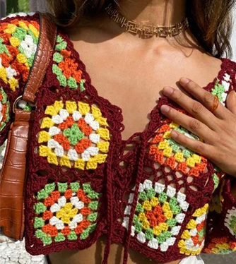
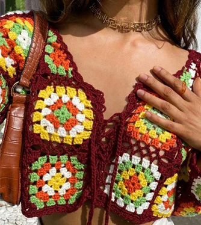

Hand made pieces
 

| Materials that you need to start | ||
|---|---|---|
| wool | needles | scissors |
| The best way to know which wool we will need, is to ask the store clerk for help, to know which one is better. | crochet needle and a regular sewing needle | the best scisser to use in crochet is a regulhar pointy scissors |